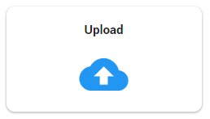
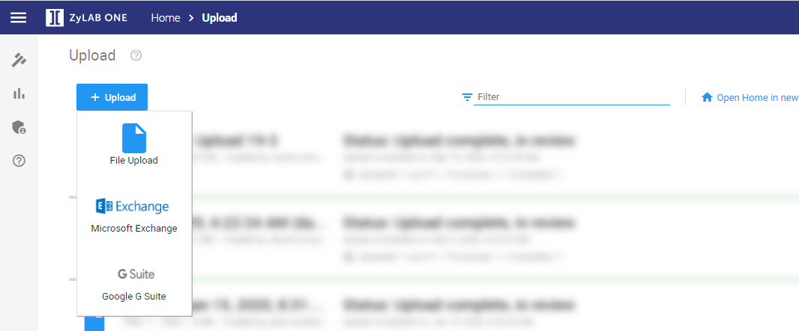

Tip: When uploading multiple individual documents, it is recommended to first add them to a zip file, then upload the zip file into ZyLAB ONE.
ZyLAB ONE makes it easy for you to get documents into a matter. You can simply drag-and-drop data directly from any location you have access to, including PSTs, zip files, or individual documents, or you can use your windows browser tool to browse and upload. In addition, with the proper rights, you can collect directly from your organization’s Exchange or G Suite environment.
On the Matter Home Page, select Upload.


To upload loose files (PSTs, folders, zip files, individual documents):
For more information—see File Upload.
Watch this video to learn how to upload documents in ZyLAB ONE:
|
|
Tip: When uploading multiple individual documents, it is recommended to first add them to a zip file, then upload the zip file into ZyLAB ONE. |
For more information on collecting directly from your organization’s Outlook mailboxes—see Cloud Upload: Microsoft Exchange.
For more information on collecting directly from your organization’s Google G Suite—see Cloud Upload: Google G Suite.
For more information on ZyLAB Upload—see Identification and Collection Methods.